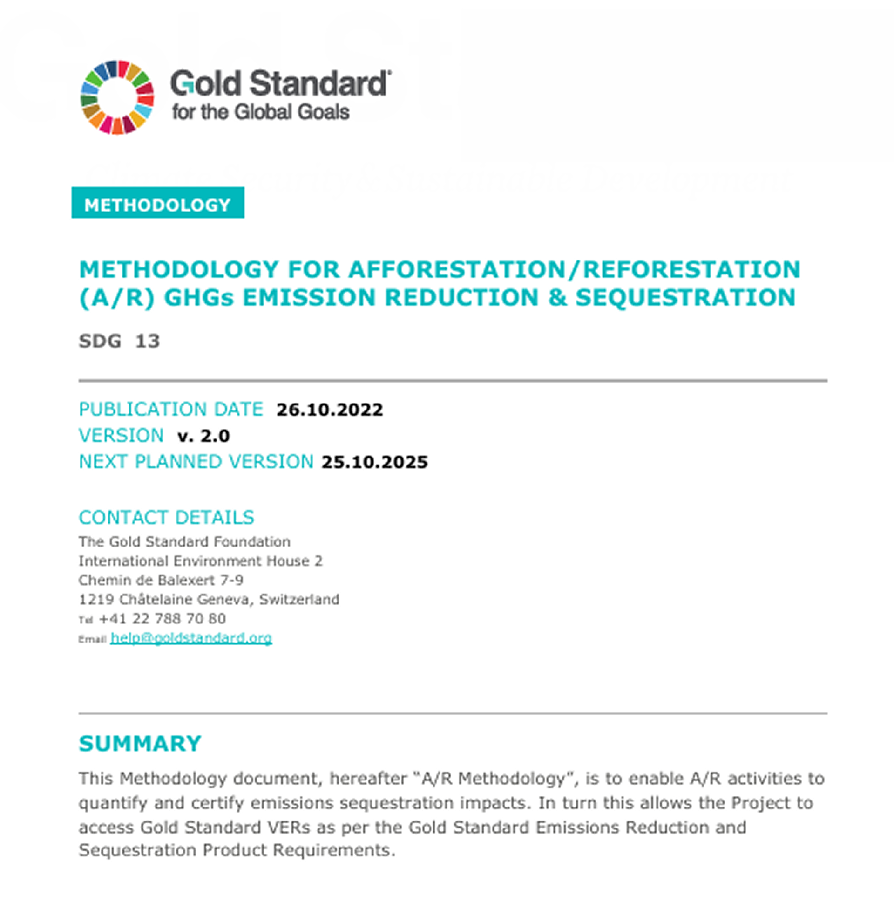

● For a bamboo plantation to generate carbon credits,
every step of the process—from bamboo growth to their usage in downstream
processes—must be meticulously measured and documented.
● This involves
tracking how much CO2 is sequestered in both the biomass
and the productsas well as
quantifying any losses during harvesting and product
generation.
● Specialised experts are required to certify these numbers
and ensure they meet the criteria set by international carbon
standards, for instance, the Gold Standard.
